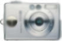

Hilfe zum FotoRenamer Hinweise zur Programmbenutzung:
Was tut das Programm? Die Bilder auf Digitalkameras sind nach folgendem Schema benannt: IMG_Nummer.jpg Dadurch gibt es keine Information im Dateinamen, wann das Bild erstellt wurde.Stattdessen nutzt das Programm die EXIF-Metadaten der Kamera und liest das ursprüngliche Erzeugungsdatum des Fotos nach folgendem Schema aus: JJJJMMTT_HHMMSS_IMG_Nummer.jpg Durch die Verwendung des ISO-Datumsformats lassen sich die Bilder alphabetisch sortieren, sodass eine Diashow einfacher möglich wird.Beispiel Aus der Datei IMG_1865.jpg wird die Datei20031020_141713_IMG_1865.jpg Das bedeutet, dass das Bild am 2003-10-20 um 14:17:13 Uhr aufgenommen wurde.© Idee und Umsetzung, 1996 Aiki IT, Berlin Last Update: 2026-10-27 |